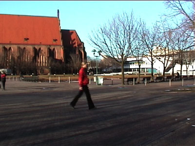
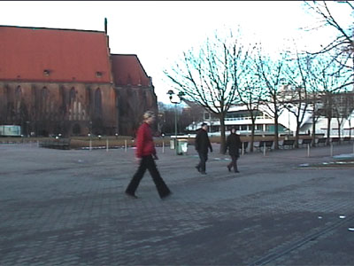
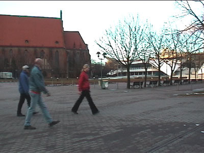

Kreislaufen / Circle Walking, 2002
| 👤 for | Nelson Vergara, Stephan Schulz |
|---|---|
| # Year | 2002 |
| 📋 I did | Video |
by Nelson Vergara and Stephan Schulz
orginal title: Kreislaufen
english title: circle walking
media: video on miniDV
year of production: 2002
country of production: Germany, Berlin
language: no words
running time: 3:15 min
"Circle Walking" is a play with the dimensions of space and time and their relativity. A person is walking continuesly in a circle, but during that a whole day is passing by with all it's lights and shadows within three minutes.You get the impression of a non-linear passing of time, layer by layer the onion gets pealed.


